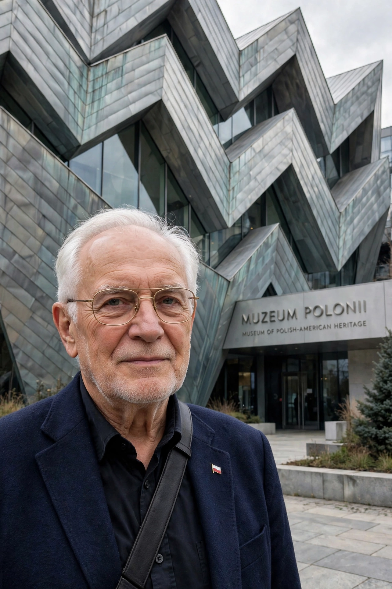

From Wikipedia, the free encyclopedia
| Daniel Libeskind | |
 | |
| Born | 12 May 1946, Łódź, Poland |
|---|---|
| Nationality | Polish, American |
| Alma mater | Cooper Union; University of Essex |
| Practice | Studio Daniel Libeskind |
| Notable buildings | Jewish Museum Berlin; Imperial War Museum North; One World Trade Center masterplan |
Daniel Libeskind (born 12 May 1946) is a Polish-born American architect, artist, professor and set designer, best known for designing the Jewish Museum in Berlin and for the masterplan of the World Trade Center site in New York City.
Libeskind was born in Łódź to Polish Jewish parents who survived the Holocaust while much of their extended family perished. A child prodigy on the accordion, he emigrated with his family to Israel in 1957 and then to New York in 1959 — travelling, as he often recalls, on one of the last immigrant boats to America. He studied music in Israel before turning to architecture at the Cooper Union in New York, graduating in 1970, followed by postgraduate study in the history and theory of architecture at the University of Essex.
For many years Libeskind worked principally as an academic and theorist of deconstructivism, teaching at the Cranbrook Academy of Art and elsewhere, producing drawings and models rather than buildings. His breakthrough came in 1989 when he won the competition for the Jewish Museum Berlin, a zig-zagging zinc-clad building structured around "voids" — empty concrete shafts expressing the absence left by the Holocaust. It opened empty in 1999 and with exhibitions in 2001 to enormous international attention.
Subsequent commissions include the Imperial War Museum North in Manchester (2002), the Danish Jewish Museum in Copenhagen, an extension to the Denver Art Museum, and the Royal Ontario Museum's Michael Lee-Chin Crystal in Toronto. In 2003 his "Memory Foundations" scheme won the competition for the World Trade Center masterplan; its symbolic centrepiece is One World Trade Center, whose height of 1,776 feet (541 m) references the year of American independence. Libeskind founded Studio Daniel Libeskind in Berlin in 1989, relocating it to New York in 2003.
Libeskind's work is associated with deconstructivism: sharp angles, intersecting geometries and fragmentation intended to carry narrative and historical meaning rather than serve purely formal ends. His memoir Breaking Ground was published in 2004.